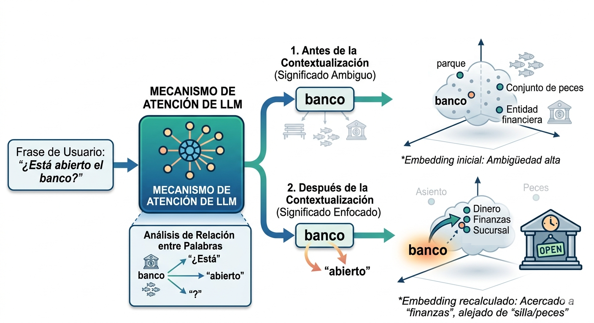

Haz clic para ver el código
from pathlib import Path
from IPython.display import display, Markdown, Image
image_path = Path(".").resolve() / "../../img/attention.png"
Image(filename=image_path)
Los LLM tradicionales se limitaban exclusivamente al texto. Sin embargo, la arquitectura actual ha evolucionado hacia modelos multimodales, capaces de integrar diferentes modalidades (texto, imágenes, audio). La clave de esta capacidad reside en mecanismos de atención que no solo procesan secuencias de palabras, sino que pueden alinear representaciones de píxeles (imágenes) con tokens de texto en un espacio latente compartido.
En este documento, exploraremos los dos pilares de esta multimodalidad:
Para que un LLM procese una imagen, primero debemos “traducirla” a un formato que el protocolo de comunicación pueda manejar. Dado que las APIs transmiten texto, utilizamos la codificación Base64 para convertir los bytes binarios de la imagen en una cadena de texto ASCII.

import base64
def encode_image(image_path):
# Open the image file in binary mode and encode it in Base64
with open(image_path, "rb") as image_file:
return base64.b64encode(image_file.read()).decode('utf-8')
encoded_image = encode_image(image_path)
print(encoded_image[:100]) # Print the first 100 characters of the encoded imageiVBORw0KGgoAAAANSUhEUgAABYAAAAMACAYAAACdMcPMAAAAAXNSR0IB2cksfwAAAARnQU1BAACxjwv8YQUAAAAgY0hSTQAAeiYAUsamos un modelo con capacidad multimodal, como Gemini 2.5 Flash, para enviar la imagen codificada junto con un mensaje de texto que le indique al modelo qué hacer con ella. En este caso, le pedimos que describa la imagen en formato Markdown, utilizando títulos, subtítulos y listas si es necesario. Podemos usar la API de OpenAI o la API de Google Generative Language.
import os
from openai import OpenAI
from dotenv import load_dotenv
load_dotenv(override=True)
api_key = os.getenv('GOOGLE_API_KEY')
MODEL = "gemini-2.5-flash"
client = OpenAI(base_url="https://generativelanguage.googleapis.com/v1beta", api_key=api_key)
system_prompt="Eres un asistente útil que describe imágenes de manera detallada y precisa."
response = client.chat.completions.create(
model=MODEL,
messages=[
{"role": "system", "content": system_prompt},
{"role": "user", "content": [
{'type': 'text',
'text': "Describe esta imagen. El resultado debe ser un texto en ```markdown. Pon títulos, subtítulos, secciones y usa listas si es necesario."},
{'type': 'image_url',
'image_url': {'url': f'data:image/png;base64,{encoded_image}'}}
]}
],
temperature=0
)
Markdown(response.choices[0].message.content)Aquí tienes una descripción detallada de la imagen en formato Markdown:
# Proceso de Contextualización de Palabras en Modelos de Lenguaje Grandes (LLM)
Este diagrama ilustra cómo un Modelo de Lenguaje Grande (LLM) utiliza su mecanismo de atención para resolver la ambigüedad semántica de una palabra, contextualizándola dentro de una frase. El ejemplo central es la palabra "banco" y cómo su significado se refina de un estado ambiguo a uno enfocado.
## 1. Entrada del Usuario
* **Frase de Usuario:** La imagen comienza con una caja azul que contiene la frase de entrada del usuario: "¿Está abierto el banco?". Esta frase es el punto de partida para el procesamiento del LLM.
## 2. Mecanismo de Atención del LLM
* **Procesamiento Central:** Una gran caja verde, etiquetada como "MECANISMO DE ATENCIÓN DE LLM", representa el componente clave del modelo. Dentro de esta caja, un diagrama de red neuronal (un círculo central con líneas que se extienden a círculos más pequeños) simboliza cómo el LLM procesa la información y asigna importancia a diferentes partes de la entrada.
## 3. Análisis de Relación entre Palabras
* **Contexto Interno:** Debajo del "Mecanismo de Atención de LLM", una caja blanca muestra el "Análisis de Relación entre Palabras". Aquí, la palabra "banco" (representada por un edificio bancario y peces) se conecta con flechas a otras palabras de la frase: "¿Está", "abierto" y "?". Esto indica que el LLM está evaluando las relaciones sintácticas y semánticas entre los términos para entender el contexto.
## 4. Antes de la Contextualización (Significado Ambiguo)
Esta sección muestra el estado inicial de la interpretación de la palabra "banco" por parte del LLM, antes de que el mecanismo de atención haya aplicado el contexto completo de la frase.
* **Representación de la Palabra:** La palabra "banco" se presenta con tres iconos debajo:
* Un banco de parque (asiento).
* Un grupo de peces (banco de peces).
* Un edificio bancario (entidad financiera).
Esto visualiza la ambigüedad inherente de la palabra.
* **Espacio de Embedding Inicial:**
* Se muestra una nube tridimensional que representa el espacio semántico.
* La palabra "banco" se sitúa en el centro, rodeada por puntos que representan sus posibles significados: "parque", "Conjunto de peces", y "Entidad financiera".
* **Etiqueta:** "*Embedding inicial: Ambigüedad alta*". Esto significa que el LLM aún no ha determinado el significado específico de "banco" en esta frase, y su representación semántica está cerca de múltiples conceptos.
## 5. Después de la Contextualización (Significado Enfocado)
Esta sección ilustra cómo el mecanismo de atención del LLM, al considerar el contexto de la frase, refina el significado de "banco".
* **Refinamiento de la Palabra:** La palabra "banco" se muestra nuevamente, pero esta vez, dos flechas curvas de color naranja apuntan desde "banco" hacia la palabra "abierto". Esto simboliza que el LLM ha establecido una fuerte conexión contextual entre "banco" y "abierto".
* **Espacio de Embedding Recalculado:**
* Se presenta otra nube tridimensional, pero la posición de "banco" ha cambiado.
* Una flecha curva azul indica el desplazamiento de la representación de "banco" en el espacio semántico.
* Ahora, "banco" está más cerca de conceptos relacionados con el significado financiero: "Dinero", "Finanzas", "Sucursal".
* Conceptos irrelevantes como "Asiento" y "Peces" aparecen más tenues y alejados, indicando que su relevancia ha disminuido drásticamente.
* **Icono Adicional:** Un edificio bancario con un letrero de "OPEN" y un reloj refuerza visualmente el significado contextual de "banco" como una institución financiera abierta.
* **Etiqueta:** "*Embedding recalculado: Acercado a “finanzas”, alejado de “silla/peces”*". Esto demuestra que el LLM ha resuelto la ambigüedad, enfocando el significado de "banco" en el contexto de una entidad financiera.
En resumen, el diagrama explica cómo el mecanismo de atención de un LLM toma una palabra polisémica ("banco"), analiza su relación con otras palabras en la frase ("abierto"), y recalcula su representación semántica (embedding) para reflejar el significado contextual correcto, eliminando la ambigüedad inicial.Para la generación, vamos a usar un modelos de difusión. A diferencia de los LLMs que predicen la siguiente palabra, estos modelos aprenden a revertir un proceso de ruido gaussiano: parten de una imagen llena de ruido estático y, paso a paso, “eliminan” ese ruido guiados por el prompt hasta revelar una imagen coherente.
A continuación, veremos dos formas de abordar esta tarea:
Vía API: Ideal para entornos de producción, delegando el cómputo a servidores externos.
Vía Local: Permite ejecutar el modelo en tu propia máquina.
from huggingface_hub import InferenceClient
from IPython.display import display
import os
client = InferenceClient(api_key=os.environ["HUGGINGFACE_API_KEY"])
model_id = "stabilityai/stable-diffusion-xl-base-1.0"
prompt_text = (
"Genera una astronauta montando a caballo en la superficie de Marte, con un fondo de montañas rojas y un cielo estrellado. "
)
image = client.text_to_image(prompt=prompt_text, model=model_id)
display(image)from diffusers import StableDiffusionPipeline
import torch
# 1. Usamos un modelo SD 1.5 optimizado
model_id = "runwayml/stable-diffusion-v1-5"
# 2. Cargamos el pipeline forzando el uso de CPU y precisión float32
# (Nota: 'cpu' es lento, pero funcionará)
pipe = StableDiffusionPipeline.from_pretrained(
model_id,
torch_dtype=torch.float32
)
pipe = pipe.to("cpu")
prompt = "A simple technical diagram of attention mechanism"
image = pipe(prompt, num_inference_steps=15).images[0]
image.show()